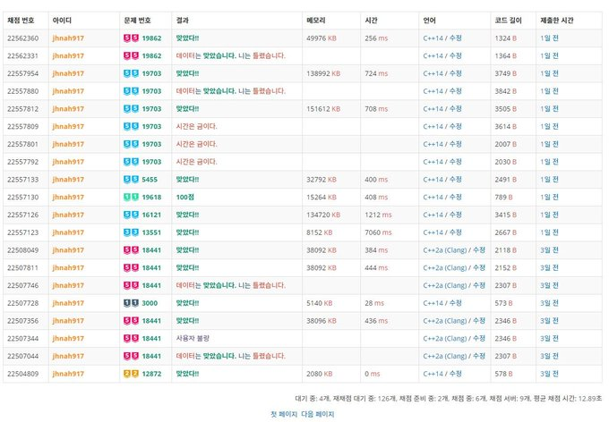
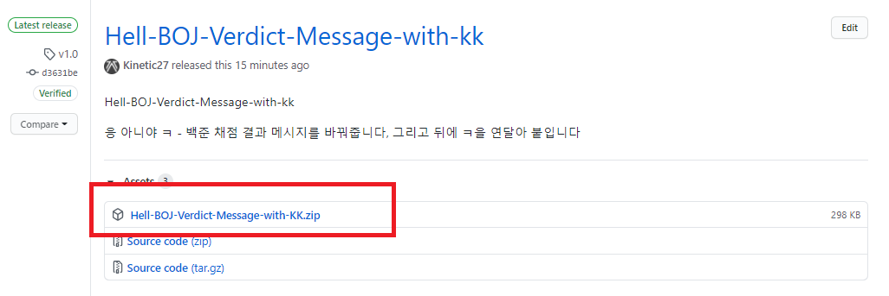
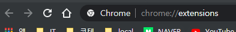
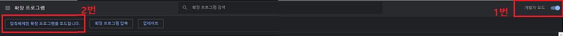
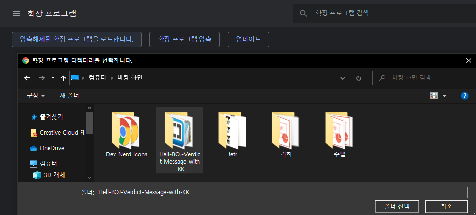
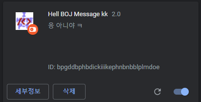
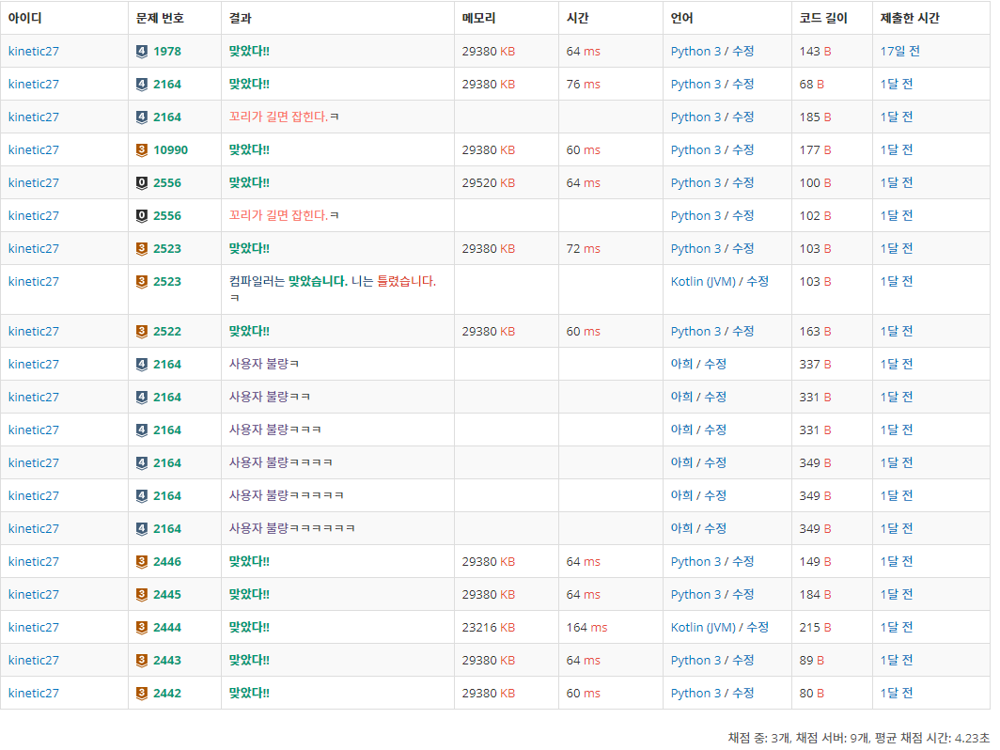

BOJ 출력메시지! 팩트폭력(?)하게 바꿔보자!
오늘의 레포 오늘 소개해드릴 레포는 Hell-BOJ-Verdict-Message-with-kk 입니다!
이 레포는 나정휘 님이 만드신 Hell-BOJ-Verdict-Message 레포를 fork한 뒤에 kiwiyou님이 짜신 스크립트 에서 아이디어를 얻어서 제가 이 두가지를 합쳐놓은 레포입니다.
Hell-BOJ-Verdict-Message 나정휘님이 만드신 크롬 브라우저 확장 은 아래 사진과 같이 BOJ 의 채점 결과를 바꾸어줍니다.

Kiwiyou님의 ㅋ 스크립트 그리고 Kiwiyou 님이 짜신 ㅋ 스크립트는 아래와 같은데요
채점 결과 항목을 status-table라는 ID를 가진 표를 가져와서 for 반복문으로 접근하면서 정답이 아닌 경우에만 ㅋ을 달도록 하셨습니다.
저는 이 두가지를 합쳐보려고합니다.
ㅋ 스크립트를 HBVM에 적용해보자 나정휘님의 코드는
1 2 3 4 5 6 7 8 9 10 11 12 13 14 15 16 17 18 19 20 21 22 let arr = document .getElementsByClassName("result" );const RED = "<span class=\"result-wa \">" ;const BLUE = "<span class=\"result-ce \">" ;const GREEN = "<span class=\"result-ac \">" ;const END = "</span>" ;const conv = { "맞았습니다!!" : "맞았다!!" , "틀렸습니다" : `데이터${END} ${BLUE} 는 ${END} ${GREEN} 맞았습니다.${END} ${BLUE} 니는 ${END} ${RED} 틀렸습니다.` , "런타임 에러" : "사용자 불량" , "시간 초과" : `${END} ${RED} 시간은 금이다.` , "컴파일 에러" : `컴파일러${END} ${BLUE} 는 ${END} ${GREEN} 맞았습니다.${END} ${BLUE} 니는 ${END} ${RED} 틀렸습니다.` , "메모리 초과" : `${END} ${RED} 다다익램` , "출력 초과" : "꼬리가 길면 잡힌다." }; for (let i in arr){ let now = arr[i].innerHTML; let str = arr[i].innerText; if (conv[str] == undefined ) continue ; now = now.replace(str, conv[str]); arr[i].innerHTML = now; }
이렇게 짜여져있었습니다 마찬가지로 반복을 돌고있네요.
제가 추가한 부분은 간단합니다, Kiwiyou님의 코드처럼
1 let stat = document .getElementById('status-table' );
를 통해서 Element를 불러온 후 인덱스를 통해서 채점 아이디에 접근했습니다.
1 id = stat.rows[i].cells[0 ].textContent;
그 다음 채점 아이디를 비교하면서 정답이 아니고 중복이 아닌 채점 결과에 ㅋ을 붙여줍니다
1 2 3 4 if (str !== "맞았습니다!!" && tmp !== id) now += 'ㅋ' .repeat(t++); else t = 1 ;
kiwiyou님처럼 이때 후위 연산자를 이용하여 다음번에 repeat할때는 ㅋ이 한개씩 더 추가되도록 하였습니다.
전체코드 이렇게 짜여진 전체 코드는 이러합니다.
1 2 3 4 5 6 7 8 9 10 11 12 13 14 15 16 17 18 19 20 21 22 23 24 25 26 27 28 29 30 31 32 33 34 35 36 37 38 39 let arr = document .getElementsByClassName("result" );let stat = document .getElementById('status-table' );const RED = "<span class=\"result-wa \">" ;const BLUE = "<span class=\"result-ce \">" ;const GREEN = "<span class=\"result-ac \">" ;const END = "</span>" ;const conv = { "맞았습니다!!" : "맞았다!!" , "틀렸습니다" : `데이터${END} ${BLUE} 는 ${END} ${GREEN} 맞았습니다.${END} ${BLUE} 니는 ${END} ${RED} 틀렸습니다.` , "런타임 에러" : "사용자 불량" , "시간 초과" : `${END} ${RED} 시간은 금이다.` , "컴파일 에러" : `컴파일러${END} ${BLUE} 는 ${END} ${GREEN} 맞았습니다.${END} ${BLUE} 니는 ${END} ${RED} 틀렸습니다.` , "메모리 초과" : `${END} ${RED} 다다익램` , "출력 초과" : "꼬리가 길면 잡힌다." }; let t = 1 , tmp = "" , id;for (let i in arr){ let now = arr[i].innerHTML; let str = arr[i].innerText; if (conv[str] == undefined ) continue ; id = stat.rows[i].cells[0 ].textContent; if (str !== "맞았습니다!!" && tmp !== id) now += 'ㅋ' .repeat(t++); else t = 1 ; now = now.replace(str, conv[str]); tmp = id; arr[i].innerHTML = now; }
직접 적용해보자 이 크롬 익스텐션을 이제 적용해봅시다!
먼저 제가 올린 Hell-BOJ-Verdict-Message-with-kk 레포 릴리즈에 들어가서 Hell-BOJ-Verdict-Message-with-KK.zip를 다운로드하고 적절한 위치에 압축을 풀어주세요!

그 다음 크롬을 켠 후 주소창에 chrome://extensions/를 입력, 혹은 설정 - 확장프로그램의 경로를 통해서 확장프로그램설정에 접속합니다!

이제 우측 위의 개발자 모드를 켜시면
압축해제된 확장 프로그램을 로드합니다.
라는 버튼이 활성화됩니다!

이제 아까 확장을 풀어놨던 폴더를 찾아서 선택 버튼을 누르고 백준 에 들어가면 잘 적용된 모습을 볼 수 있습니다!


제 채점현황을 봅시다!

엄청난 팩폭으로 PS력을 향상시켜주네요!
혹시 ㅋ을 빼고싶다면 원본인 나정휘님의 레포 Hell-BOJ-Verdict-Message 를 받아서 적용을 하거나 바뀌는 멘트를 수정하고싶다면 스크립트 상단의
1 2 3 4 5 6 7 8 9 const conv = { "맞았습니다!!" : "맞았다!!" , "틀렸습니다" : `데이터${END} ${BLUE} 는 ${END} ${GREEN} 맞았습니다.${END} ${BLUE} 니는 ${END} ${RED} 틀렸습니다.` , "런타임 에러" : "사용자 불량" , "시간 초과" : `${END} ${RED} 시간은 금이다.` , "컴파일 에러" : `컴파일러${END} ${BLUE} 는 ${END} ${GREEN} 맞았습니다.${END} ${BLUE} 니는 ${END} ${RED} 틀렸습니다.` , "메모리 초과" : `${END} ${RED} 다다익램` , "출력 초과" : "꼬리가 길면 잡힌다." };
부분을 잘 수정하면 되겠네요!
재미있게 읽으셨거나 오류가 발생하신다면 댓글을 달아주시면 감사하겠습니다!!
도네이션 페이지 추가 새로 글을 쓰기는 애매해서 이 글 하단에 알려드립니다!
블로그에 가끔 후원을 보내주시는 분들이 생겨서 도네이션 감사 페이지 를 제작했습니다!
후원을 보내주실때 메시지를 같이 보내주실 수 있는데 해당 메시지와 함께 저 페이지에 올려드리고 받은 후원금은 주로 밤샘 작업을 위한 커피로 사용됩니다ㅠㅠ
혹시 이름, 메시지를 바꾸고싶으신분은 연락처 로 말해주시거나 댓글을 달아주세요!